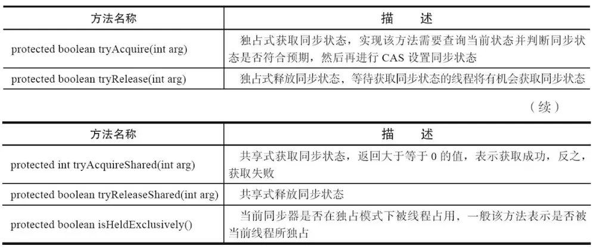
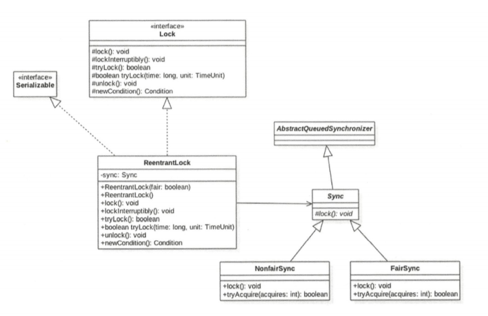

OverView
锁相关类关系图：

锁概述
乐观锁与悲观锁
乐观锁和悲观锁是在数据库中引入的名词，但是在并发包中也引入了类似的思想，非阻塞同步CAS操作就是乐观的并发策略，阻塞同步synchronized就是悲观的并发策略。
悲观锁指对数据被外界修改持保守态度，在数据被处理前先加锁，提交事务后才释放锁。悲观锁的实现往往依靠数据库提供的锁机制。
乐观锁则认为数据在一般情况下不会造成冲突，访问数据前不加锁，在事务提交时才检测是否存在冲突。乐观锁的实现一般是在表中添加version字段或者使用业务状态。
公平锁与非公平锁
公平锁表示线程获取锁的顺序是按照线程请求锁的时间顺序来决定，而非公平锁则按调度策略决定。在没有公平性需求的前提下尽量使用非公平锁，因为公平锁开销较大。
ReentrantLock提供了公平锁和非公平锁。
公平锁：ReentrantLock pairLock = new ReentrantLock(true);
非公平锁：ReentrantLock pairLock = new ReentrantLock(false);。如果构造函数不传递参数，则默认为false。
独占锁与共享锁
根据锁只能被单个线程持有还是能被多个线程共同持有，锁可以分为独占锁和共享锁。
独占锁保证任何时候都只有一个线程能得到锁，ReentrantLock就是独占锁。独占锁是一种悲观锁，由于读操作并不会影响数据的一致性，而独占锁只允许同一时间由一个线程读取数据，因此限制了并发性。
共享锁则可以同时多个线程持有，例如ReadWriteLock。共享锁是一种乐观锁，它允许多个线程同时进行读操作。
可重入锁
一个线程再次获取它自己已经获取的锁时不会被阻塞，那么该锁就是可重入锁。synchronized锁和ReentrantLock均为可重入锁。
可重入锁的原理是在锁内部维护一个线程标识和一个计数器。计数器初始值为0，说明该锁没有被任何线程占用。当一个线程获取了该锁，计数器值+1。当获取了该锁的线程再次获取锁时发现线程标识是自己，计数器值再+1。释放一次锁则计数器值-1。当计数器值为0时，线程标识置null，阻塞线程被唤醒竞争该锁。
自旋锁
自旋锁的思想是让一个线程在请求一个共享数据的锁时执行忙循环（自旋）一段时间，如果在这段时间内能获得锁，就可以避免进入阻塞状态。可以通过-XX:PreBlockSpinsh设置尝试次数，默认为10次。
JDK层面的锁由java.util.concurrent.locks包提供，其接口和类如下图所示：
LockSupport
LockSupport类是个工具类，其主要作用是挂起和唤醒线程，它是创建锁和其他同步类的基础。
LockSupport类与每个使用它的线程都会关联一个许可证，在默认情况下调用LockSupport的方法的线程是不持有许可证的。该类是使用Unsafe类实现的。
LockSupport的构造方法为私有构造方法，无法被实例化，其方法基本为静态方法。
Unsafe的park和unpark方法
因为LockSupport的核心函数都是基于Unsafe类中定义的park和unpark函数，下面给出两个函数的定义:
1 | public native void park(boolean isAbsolute, long time); |
对两个函数的说明如下:
- park函数，阻塞线程，并且该线程在下列情况发生之前都会被阻塞: ① 调用unpark函数，给予该线程许可。② 该线程被中断。③ 设置的时间到了。并且，当time为绝对时间时，isAbsolute为true，否则，isAbsolute为false。当time为0时，表示无限等待，直到unpark发生。
- unpark函数，给予线程许可，即激活调用park后阻塞的线程。这个函数不是安全的，调用这个函数时要确保线程依旧存活。
park()
初次调用该方法后，当前线程挂起。
由于可能存在虚假唤醒的情况，所以调用时最好也使用循环条件判断方式。
如当前线程被其他线程中断，不会抛出InterruptedException。
park(Object blocker)
Thread类中有个变量volatile Object parkBlocker，用于存放该方法传递的blocker对象，也就是把blocker变量存放到了调用该方法的线程成员变量中。
使用该类的好处是，方便使用诊断工具查看阻塞原因。
parkNanos(long nanos)
与park()的不同仅在于会在nanos时间之后自动返回。
parkUntil(Object blocker, long deadline)
在指定的时间内阻塞线程。deadline单位是ms，表示从1970到未来某个时刻的总毫秒数。
unpark(Thread thread)
调用该方法后，如果线程没有持有与LockSupport关联的许可证，则使shi线程持有。如果线程已经因park()而挂起，则唤醒线程。若unpark()调用前未调用过park()，那么由于线程持有许可证，再次调用park()后线程不会挂起并失去许可证。
注意：park()方法不会释放锁，ConditionObject的await()会释放锁，并且该await()方法挂起线程就是使用park()实现的。
AQS
AQS全称抽象队列同步器(AbstractQueuedSynchronizer)，它是实现JDK层面锁的基础组件，locks包ReentrantLock和ReentrantReadWriteLock均由AQS实现，同时CountDownLatch与Semaphore也是由AQS实现。
类图结构
由该图可知AQS继承自AbstractOwnableSynchronizer，并有内部类ConditionObject和Node。AQS的核心是state变量与队列，它的所有实现类都是围绕着对此二者的操作来进行的。
1 | private transient volatile Node head; |
AQS概述
队列
AQS是一个FIFO的双向队列，该队列用于存放竞争资源失败的线程，队列元素为Node。Node中的thread变量用来存放进入AQS队列的线程，SHARED用于标记线程是获取共享资源时失败而放入AQS队列的，EXCLUSIVE则用于标记线程是获取独占资源时失败而放入AQS队列的，waitStatus记录线程等待状态，可以取如下值：
- SIGNAL=-1：线程需要被唤醒。
- CONDITION=-2：线程在条件队列(ConditionObject)中等待，而非AQS队列。
- CANCELLED=1：线程被取消了。
- PROPAGATE=-3：释放共享资源时需要通知其他节点。
- 0：线程新加入队列。
state变量
在AQS中维持了一个状态值state变量，AQS的不同实现中对state含义的定义均不同。JUC中的实现主要如下：
- ReentrantLock：state为0表示没有线程获取锁，大于1的整数表示线程获取锁的可重入次数。
- ReentrantReadWriteLock：state的高16位表示读锁的的个数，低16位表示线程获取写锁的可重入次数。
- Semaphore：state表示当前可用信号的个数。
- CountDownLatch：state表示计数器当前的值。
操作state的方式分为独占方式和共享方式，两种方式获取和释放资源使用的方法分别为：
- 独占：void acquire(int arg); void acquireInterruptibly(int arg); boolean release(int arg)。
- 共享：void acquireShared(int arg); void acquireSharedInterruptibly(int arg); boolean release(int arg)。
在上述方法中调用了一系列需要实现类自己实现的模板方法，一共有以下五个：

锁的底层支持
AbstractOwnableSynchronizer
该抽象类中定义了一个变量
1 | private transient Thread exclusiveOwnerThread; |
表示独占模式下当前占有锁和资源的线程。
独占锁-ReentrantLock与WriteLock
对于AQS独占锁，当多个线程同时调用lock.lock()获取锁，只有一个线程获取到锁，其他线程会被转换为Node节点插入到lock锁对应的AQS队列中，并做自旋CAS尝试获取锁，尝试失败后阻塞。“自旋CAS/阻塞”的操作在acquireQueued()和doAcquire*()系列方法中实现。
线程通过调用acquire(int arg)获取独占资源，void acquire(int arg)源码如下：
1 | public final void acquire(int arg) { |
tryAcquire()尝试CAS修改state值获取锁，若成功则表达式!tryAcquire(arg)为false，&&后的表达式无需继续执行，方法直接结束；若失败，则addWaiter()将当前线程封装为类型为NODE.EXCLUSIVE的Node节点插入AQS队列末尾，acquireQueued()方法中节点自旋CAS尝试获取锁，失败则阻塞。
addWaiter方法源码如下：
1 | private Node addWaiter(Node mode) { |
enq方法源码如下：
1 | private Node enq(final Node node) { |
acquireQueued方法源码如下:
1 | final boolean acquireQueued(final Node node, int arg) { |
shouldParkAfterFailedAcquire方法和parkAndCheckInterrupt方法源码如下：
1 | private static boolean shouldParkAfterFailedAcquire(Node pred, Node node) { |
接下来讲release方法，该方法释放独占方式获取的锁和资源：
1 | public final boolean release(int arg) { |
共享锁-ReadLock
线程通过调用acquireShared方法获取共享资源：
1 | public final void acquireShared(int arg) { |
由源码可知，共享方式与独占方式实现类似。tryAcquireShared成功则直接返回，失败则入AQS阻塞队列尾部，自旋一次后阻塞挂起自己。releaseShared源码如下：
1 | public final boolean releaseShared(int arg) { |
释放锁成功则调用doReleaseShared唤醒阻塞队列的所有线程。
条件变量ConditionObejct
ConditionObject实现了Condition接口，是AQS的内部类，其含义是条件变量，用于结合锁实现同步。
ConditionObject通过AQS锁对象的newCondition()创建(该方法是Lock接口的方法，需要实现类实现)，它可以直接访问AQS对象内部的变量，比如state值和队列。每个ConditionObject对应一个条件队列（单向链表队列），用于存放调用await()方法后被阻塞的线程，而signal()/signalAll()方法用于唤醒条件队列中阻塞的线程并将节点加入AQS队列。条件队列的队头、尾分别为firstWaiter和lastWaiter。
与synchronized内置锁不同，synchronized只能与一个共享变量的wait()或notify()方法实现同步，而AQS实现的一个锁可以创建多个ConditionObject。与wait()和notify()类似，调用条件变量的await()和signal()之前，必须先获取条件变量对应的锁，否则也会抛出IllegalMonitorStateException。条件变量使用示例：
1 | public static void main(String[] args){ |
运行结果：
1 | begin wait |
注意，await()方法会释放锁，而signal()方法不会释放锁，必须手动调用锁对象的unlock()方法释放锁。await()源码如下：
1 | public final void await() throws InterruptedException { |
调用await()后，在内部会构造一个类型为Node.CONDITION的节点并插入条件队列末尾，之后当前线程会释放锁（修改state的值），然后通过LockSupport阻塞当前线程。另一个线程调用signal()后，条件队列队头节点出队放入AQS队列的队尾，然后唤醒线程，该线程继续执行await()方法中LockSupport.park(this)之后的代码，调用acquireQueued()方法自旋CAS尝试获取锁。
最后总结如下图：一个锁对应一个AQS队列，对应多个条件变量，每个条件变量有自己的一个条件队列。

ReentrantLock详解
类图结构

1 | public ReentrantLock() { |
由构造方法可知，默认是创建非公平锁。
获取锁
void lock()方法
1 | public void lock() {sync.lock();} |
void lockInterruptibly()方法
该方法对中断进行响应，也即当前线程调用该方法时，如果其他线程调用了当前线程的interrupt方法，则当前线程会抛出InterruptedException异常。
1 | public void lockInterruptibly() |
boolean tryLock()方法
尝试获取锁。若该方法失败当前线程不会入AQS队列，也不会阻塞。
释放锁
void unlock()方法
1 | public void unlock() { |
ReentrantReadWriteLock详解
ReentrantReadWriteLock采用读写分离的策略，允许多个线程同时获取读锁，来满足实际中写少读多的场景。
类图结构
1 | public ReentrantReadWriteLock() { |
由构造方法可知，默认创建非公平锁。
读写锁的内部维护了一个ReadLock和一个WriteLock，它们依赖继承自AQS的Sync实现具体功能。读写锁使用state的高16位表示读状态，也即读锁线程个数；低16位表示写锁的可重入次数。Sync类源码表现如下：
1 | static final int SHARED_SHIFT = 16;//偏移值 |
由源码可知，通过无符号右移获取读锁线程个数，通过与掩码按位与获取写锁可重入次数。
写锁
下面只介绍tryAcquire方法
1 | protected final boolean tryAcquire(int acquires) { |
注意：ReentrantReadWriteLock在采用非公平锁并且在读多写少的情况下，容易导致写线程饥饿。可以使用公平锁或者采用StampedLock。